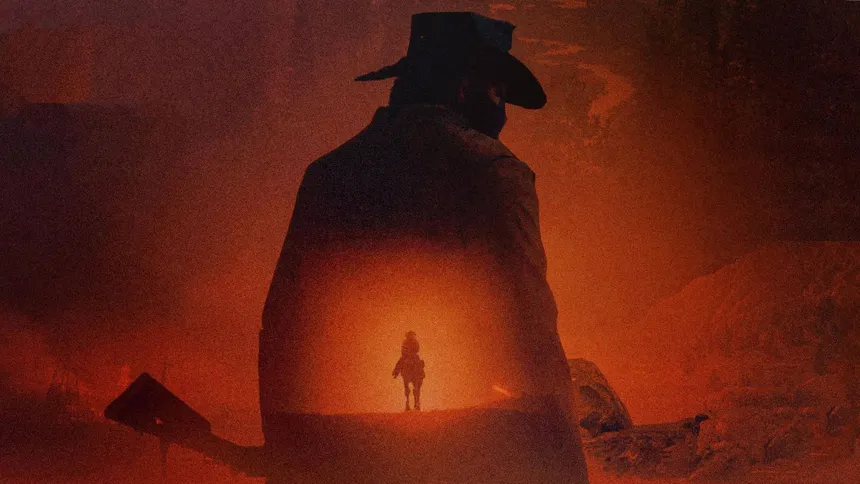
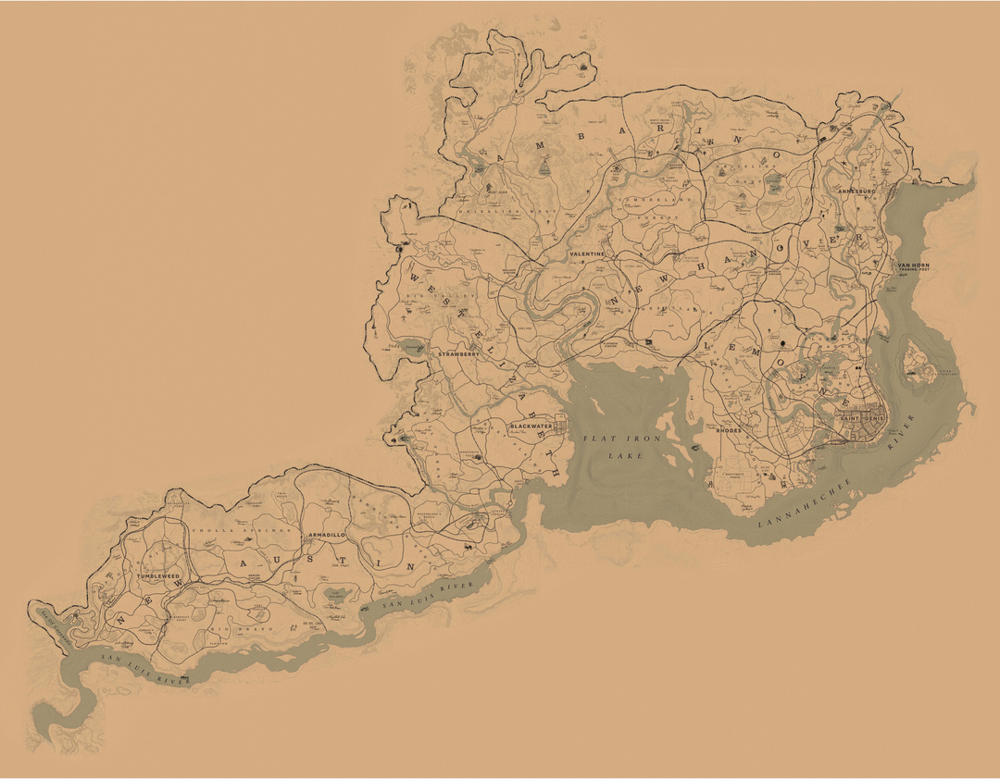

Pesquise
Digite o nome de um animal, arma, missão ou cidade para filtrar o mapa na hora.
Animais lendários, armas, cidades e missões perdíveis em um só lugar, com filtros, pesquisa e checklist de progresso.
Abrir o mapa

0 de 0 concluídos
Digite o nome de um animal, arma, missão ou cidade para filtrar o mapa na hora.
Use as abas para mostrar só uma categoria e evitar excesso de ícones.
Registre o que você já encontrou. O progresso fica salvo no seu navegador.
Destacadas em vermelho. Confira o capítulo antes de avançar na história.